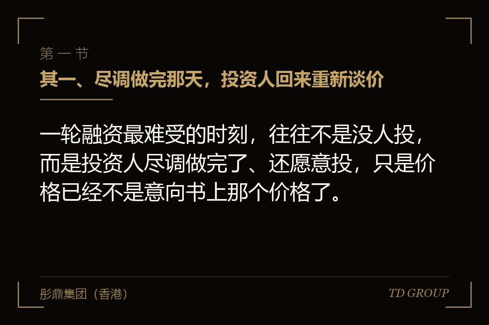
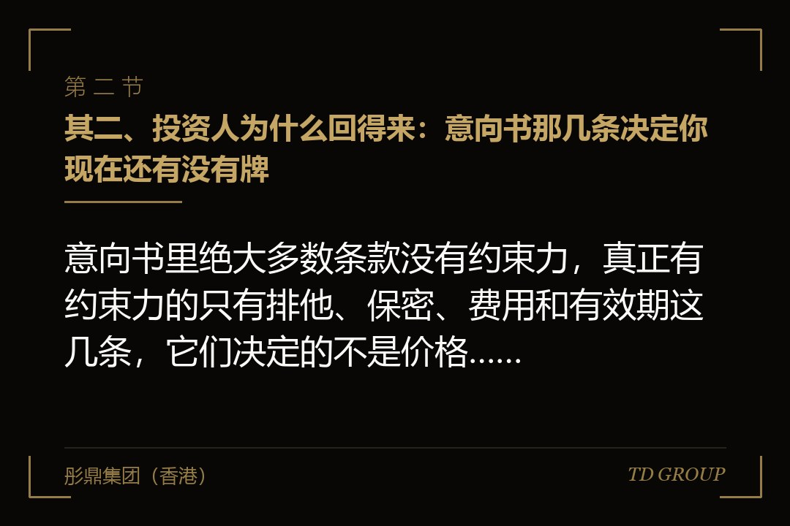
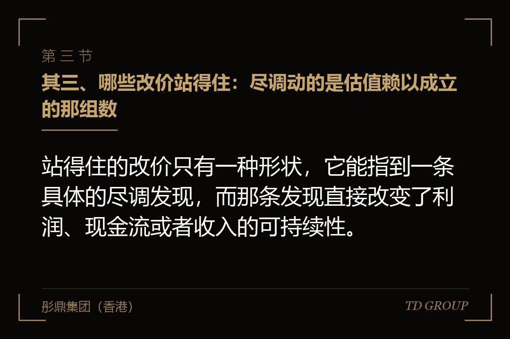

其一、尽调做完那天，投资人回来重新谈价

结论先行：一轮融资最难受的时刻，往往不是没人投，而是投资人尽调做完了、还愿意投，只是价格已经不是意向书上那个价格了。
假设有家做医疗器械经销的公司，去年营收三亿出头，自己算的净利两千多万。年初跟一家基金签了意向书，投前估值定在六个亿，对方出九千万拿一成五，同时进一家董事。
尽调做了四个多月。会计师、律师、行业顾问三拨人先后进场，问题清单前后发了六轮。到最后一周，投资经理约创始人喝茶，开口那句话是：整体我们还是看好的，只是有几个数要一起再看一下。
那天下午拿到的新方案是：投前估值从六个亿调到四亿六，出资金额不变，占股从一成五变成接近两成，另外加一条三年业绩承诺。
创始人当场的反应是被耍了。他为这一轮停掉了另外两家机构的接触，审计报告花了小一百万，团队准备资料几乎停了半年的业务动作。
但这件事没那么简单。新方案后面附着一张表，列了尽调查出的十一项问题，其中三项确实动了估值的地基。剩下八项值不值这一亿四，才是这场谈判真正的题目。
顺带说清一件容易混的事：这跟下一轮估值低于上一轮不是一回事。那是跨轮的价格问题，本文讲的是同一轮之内、意向书签完之后的改价。
其二、投资人为什么回得来：意向书那几条决定你现在还有没有牌

结论先行：意向书里绝大多数条款没有约束力，真正有约束力的只有排他、保密、费用和有效期这几条，它们决定的不是价格，是你被锁在这张桌上多久。
意向书通常会写明，除少数几条之外其余内容不构成对双方的法律约束。这不是投资人耍花招，是这类文件的通行写法：尽调还没做，谁也没办法把价格锁死。
有约束力的那几条里，排他条款影响最大。它约定在一段期限内企业方不得与其他投资人接触、谈判或者签署任何文件。期限长短各家写法差别很大，短的一两个月，长的可以到半年，有的还带自动续期。
排他期一开始，企业的谈判位置就在缓慢下滑。不是因为对方强势，而是因为备选方案被合同关掉了——原本在跟的另外两家机构，这几个月只能收到一句"我们还在流程里"。
费用条款是第二处。多数意向书写各自承担各自的中介费用，也有写企业方承担投资人尽调费用的。后一种写法下，谈崩了企业还要付一笔账单，这笔钱会在最后关头变成心理筹码。
有效期这一条最容易被忽略。意向书通常给自己设一个失效日，过了那天双方不再受排他约束。很多创始人根本不清楚自己那份还有几周到期，而这个日期恰恰是他手上仅有的时间牌。
所以这一步的实操结论很直白：投资人能不能回来改价，答案在签意向书那天就写好了。企业方在那一刻该争的，是排他期短一点、有效期写明确、费用各付各的。
其三、哪些改价站得住：尽调动的是估值赖以成立的那组数

结论先行：站得住的改价只有一种形状，它能指到一条具体的尽调发现，而那条发现直接改变了利润、现金流或者收入的可持续性。
头一类是口径调整。企业自己算的净利两千多万，会计师按审计口径重算可能只剩一千三：关联方之间的服务费要抵销，一部分收入确认时点要往后推，研发费用里混进去的人员成本要还原。这不是压价，这是那个数本来就不是那个数。
第二类是或有负债。社保与住房公积金没有足额缴纳的补缴敞口、对外担保、未决诉讼、税务上的历史处理方式，尽调查出来之后要么在估值里扣掉，要么在交易结构里留一笔钱等着。
第三类是可持续性。收入高度集中在一两家客户、核心专利的权属没理清、关键人员没签竞业、主要合同里带着控制权变更条款——这几样不改变过去的数字，但改变这些数字能不能再重复三年。
这三类的共同点是：它们在意向书签署那一刻是不可知的。投资人给出六个亿，基于的是企业自己提供的一套数；尽调之后那套数变了，价格跟着变，逻辑上说得通。
所以拿到改价方案，头一步不是回击，是把改价拆开：这一亿四逐条对应到哪几项发现、每一项分摊多少。对方拆不出来的那部分，才是可以谈的部分。
这里也要说一句对企业方不好听的。很多改价之所以发生，是因为企业在融资前把数说得太漂亮：商业计划书上的净利率、口头说的续约率、给投资人看的那版报表，跟审计出来的那一版对不上，本身就是一封改价邀请函。
其四、哪些是趁火打劫：五个当场能分辨的信号
结论先行：趁火打劫的改价有一个共同特征，它说不出自己对应哪一条尽调发现，只说市场变了、内部评审没通过。
头一个信号是时点。改价出现在排他期过半、企业已经停掉其他接触、审计费用已经付掉之后。真因为尽调发现而调整的价格，通常在发现的那一周就会提出来，不会攒到最后一起说。
第二个信号是幅度与发现不匹配。查出的问题合计影响利润三百万，改价却砍掉一亿多。这种时候该做的是要求对方给出换算口径：按几倍市盈率算的，这三百万怎么放大成一亿多。
第三个信号是换人来谈。前面一直是投资经理和董事总经理在跟，改价方案却由一个此前没出现过的人送来，理由是投委会的意见。这有可能是真的，也可能是把拒绝的成本挪到一个不用负责的位置上。
第四个信号是清单越查越长。尽调该收口的时候不收口，新问题一周一批地冒出来，每一批都对应一次条件调整。这时候要回头看的是尽调范围和结束时点在意向书里怎么写的。
第五个信号是只改结构不给理由。价格一个字不动，突然要加一条三年业绩承诺、再加一笔两成的托管款。这类调整同样是在改价，只是把它藏进了条款里。
也要说句公道话：这五个信号都不是定罪的证据。投资人那边确实存在真实的内部流程，投委会可能真的否了原方案，市场行情确实会在四个月里变化。企业方能做的是把每一条摆到桌面上问一遍，而不是替对方想理由。
其五、价格不动，但条款会动：另一条改价的路
结论先行：价格没降不等于没改价，业绩承诺、交割托管、回购触发、交割先决条件，这四样每加一条，都在把风险从投资人那边挪回企业方。
业绩承诺是最常见的替代方案。它把估值分歧推到未来：现在按你的价格算，达不到约定利润再补偿。它的具体设计是另一个话题，这里只需要知道一件事——它把不确定性从投资人那边转到了创始人个人身上。
交割托管是第二种。交易对价里留出一部分不当场支付，存进共管账户，等约定期限过了、尽调时担心的那些事没有发生，再放给转让方。它对应的通常是或有负债那一类发现。
回购触发是第三种。原来只挂在上市时点上的回购条款，改价之后可能多出几条：业绩不达标、核心人员离职、某项资质没拿到，都成为触发情形。条款字数增加不多，创始人承担的义务增加很多。
交割先决条件是第四种，也是最容易被低估的一种。尽调查出的每一个问题，都可以被写成交割前须完成：补缴社保、解除某笔担保、拿到某家客户的同意函、办完某项变更登记。
这四条各自都有正当用途，问题在于它们经常被一起加上。企业方看到价格没变就松一口气，签完才发现自己接住的东西比降价一亿还重。
判断办法跟上一章一样：把每一条结构调整也换算成钱。这笔托管压住多少现金、压多久；这条业绩承诺在没达标的情形下要拿出多少；这条回购在什么情形下会被触发。算不出来的，就是还没看懂。
其六、你手上还剩什么牌
结论先行：企业方在改价谈判里能用的牌只有四张——现金跑道、备选投资人、审计数据的有效期，以及对方已经花掉的钱。
现金跑道是最硬的一张，也最容易被自己算错。要算的不是账上还剩多少，而是从今天起到不得不接受任何条件的那一天，还有几个月。跑道压到只剩一两个月的时候，谈判其实已经结束了。
备选投资人是第二张，而它在排他期里被关着。有经验的企业方会在签意向书之前就把排他期压短，并且写明期限一到即可恢复接触——这一条要在意向书里争，不是到时候再说。
审计数据的有效期是第三张，双方都受它约束。财务数据过了一定期限要更新，一旦更新就意味着补审计、补底稿、再花一轮时间和费用。投资人同样不愿意重来，所以这张牌是共同的。
第四张是对方已经投入的成本。尽调费用、律师费用、投委会已经走过的流程，这些已经花掉的钱会让投资人不愿意空手离场。它不足以让对方收回改价，但足以让对方接受一个中间价。
反过来说，有一张牌企业方常以为自己有，其实没有：情绪。"那我不融了"这句话，在对方算过你的现金跑道之后，几乎没有分量。
再假设一家做工业自动化的公司，尽调后被要求下调两成五。创始人没有立刻回价，先去拉长跑道：延后两条产线的投入，跟主要供应商谈了两个月账期，把六个月的跑道变成九个月，然后回到桌上只谈那三项站得住的发现。最后成交的价格比对方的新方案高出一截。
其七、三种接法，各自的代价
结论先行：改价方案摆到面前，能走的路只有三条——接、拆开谈、走，选哪一条取决于跑道长短和那几项发现站不站得住。
直接接，代价是明确的：估值低了、条款重了，但交易能在原定时点交割。跑道很短、这轮钱是用来发工资的企业，接下来不丢人；丢人的是明明该接却拖到没有选择。
拆开谈是多数情形下的正解。承认站得住的那几项，按对方的口径把它折成钱；说不清的那几项要求补充依据；结构类条款逐条换算成金额，再一起放到台面上比。
拆开谈还有一个隐含收益：它把谈判从"你压价我不接受"变成"我们一起核对这十一项"。前一种是立场对立，后一种是共同工作，而后一种更容易谈出中间价。
走，是第三条，也是最少被认真评估的一条。走的前提是三件事：跑道够长、排他期到期或者能协商解除、手上真的有第二个接触对象。三件缺一件，"走"就只是一句气话。
走还有一个后遗症要提前想清楚：这一轮的尽调发现不会消失。下一家投资人做尽调会查到同样的问题，也会问出同样的价格。所以走之前该做的是把那几项问题真正整改掉，而不是换个人再赌一次。
我们跟华尔街俱乐部有合作，跨境的股权交易见得多一些，最后真正走掉的比例并不高，多数落在拆开谈那一档。差别只在企业方进场时手里有没有那份逐条对照的清单。
其八、时点与自查：把改价那一天提前到尽调之前
结论先行：这件事的主动权不在改价那一天，而在尽调开始之前——你自己先把那十一项查出来，对方就没有那么多可拆的。
顺序应该倒过来。企业方在签意向书之前，先花两周自己做一遍模拟尽调，把大概率会被查出的问题列成清单，逐条标上：能不能在交割前解决、解决要多少钱、要多长时间。
主动披露的问题和被查出来的问题，在谈判桌上是两个价钱。前者是"我们知道有这件事，已经在处理"，后者是"你没有告诉我"。同一件事，后一种说法能多砍一档。
意向书那一侧要争的有四样：排他期尽量短、有效期写明确、费用各自承担，以及最容易被忽略的一条——把尽调范围和完成时点写进去，避免尽调无限延长。
还可以争一条更实用的：约定投资人若基于尽调发现调整价格，须以书面形式列明每一项发现及其对估值的影响。这一条本身不阻止改价，但它把"市场变了"这类理由挡在门外。
收口给一份今天下午就能开始的自查清单，用不着请中介：财务口径（收入确认、关联交易、费用还原）、用工（社保公积金、劳动合同、竞业限制）、税务（历史处理方式、优惠适用）、资产（房产土地、专利商标权属）、合同（大客户、授信、租赁里的控制权变更条款）、诉讼与对外担保。
每一项填三样：现在是什么状态、交割前能不能解决、解决需要多少钱和多长时间。填完你会发现，这份清单跟投资人四个月后拿给你的那份，重合度相当高。
最后留一个问题。本文开头那家医疗器械公司，十一项发现里三项站得住、八项说不清，跑道还剩七个月，排他期还有两个月到期——换你是那位创始人，你是接、是拆开谈，还是走？